战斗及挖矿进阶教程
战斗及挖矿进阶教程
1.向更深处挖掘
镐子的等级分化：木镐<金镐<石镐<铁镐<钻石镐，金镐的耐久极低，但是挖掘速度很快。 钻石镐耐久极高，挖掘速度很快。
高级的矿石需要用高级的镐子来开釆。比这把镐子高级的镐子也可以开釆这种矿物。例如铁 矿石至少要用石镐开釆，那么石镐以上的镐子也可以开釆铁矿石。
既然你已经挖到铁了，做好了牧场/农场之类的，那么做一把铁镐吧。铁镐能挖掘更多种类 的矿物，挖掘速度更快，耐久更高。
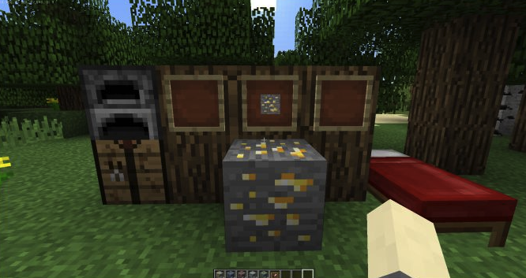
金矿石是中很稀有的一种矿物，生成在32层以下。它一般以至少3个一堆的 数量出现金锭可以做很多东西，如时钟，金装备。这些东西以后都会讲到。 注：金矿石需要使用铁镐/钻石镐开釆，开釆后掉落1金矿石◊使用其他的镐子开釆速度缓 慢，不会掉落金矿石。
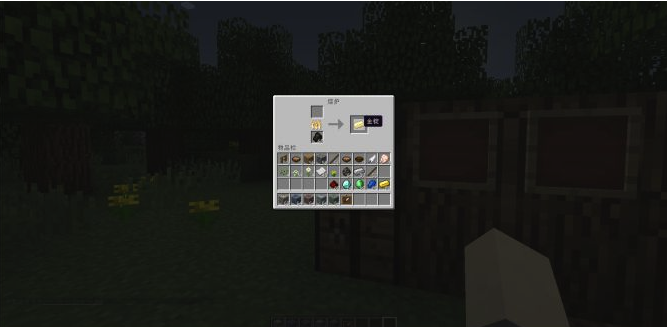
金灿灿的金锭，是不是很好看呢？
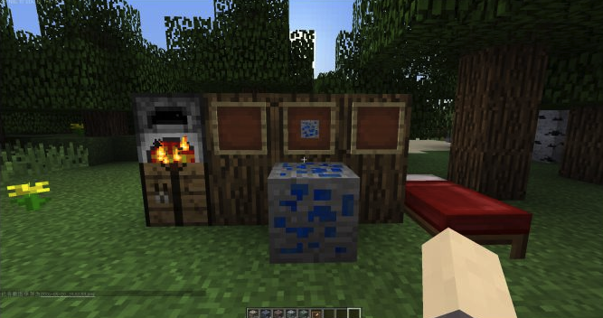
青金石矿石。青金石矿石挖掘后掉落青金石，无需條炼。青金石可以用来做为染料，或者合 成染料。在1.8以及1.8之后，附魔任何装备都需要青金石，根据附魔的低级高级来确定 消耗青金石的数量。青金石矿石出现在31层以下，挖掘掉落2-5点经验球与4-8个青金 石。
注：你需要用石头镐子以及以上来开釆青金石矿石。
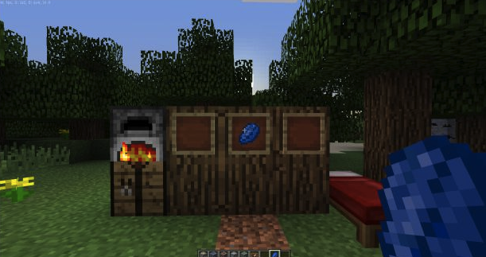
青金石。
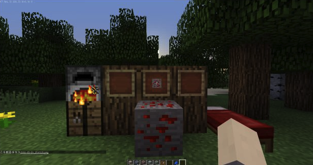
红石矿石，挖掘后掉落红石，红石是制作咅种红石设备的基础物品，但是一般在前期没有用。 如果你经常在地下最深处找钻石，你可能会挖红石矿挖到不想挖，因为太多了。通常出现在 16层以下，经楼主玩挖红石挖到爆的经猃，红石一般每次都会以3-9个的数量为一堆出现 在地下。所以中期-后期通常会挖到不想挖。挖掘一个红石矿石掉落4-5个红石与1-5点 经猃。
注：要用铁镐以及铁镐以上挖掘
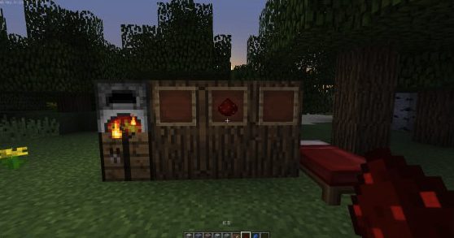
红石
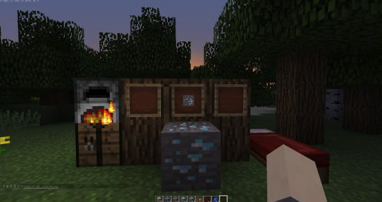
钻石矿，Minecraft中几乎最稀有，最珍贵,最有用的旷石，用它做成的装备防御力高， 用它做成高。用它做成的工具破坏速虔极快，但是它的罕见也是出了名的。它 只出现在地下16层以下，而且生成几率极低，一般以2-5个为一堆出现，挖掘掉落1钻 石与3-7点经猃，无需烧炼。
幵采技巧：当你挖到钻石时，你把眼前的钻石挖完了，请再挖合个斜对角的方块，因为钻石 矿石生成的时候可能那么一堆里有一些在斜对角里，这样可以确保把所有的钻石带走。 注：你需要用铁镉以及以上的镉子挖掘钻石矿。
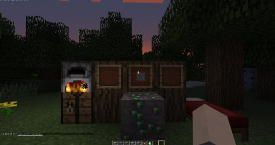
绿宝石矿石：一般用在和村民交易或者信标。绿宝石矿石只在特性的生态群系生成，而且稀 有度堪比钻石。绿宝石矿石一般生成在可以生成区域的32层以下，它一般只以1-3个为一 堆出现，十分稀少。挖掘后掉落1个绿宝石与3-7点经验球。
注：你需要用铁镐以及以上镐子开釆绿宝石矿石
2. 战斗/挖矿进阶
也许你初期试着打怪物, 但是却被打的残血, 那么你需要一些铁锭来增加你的攻击/防御力.
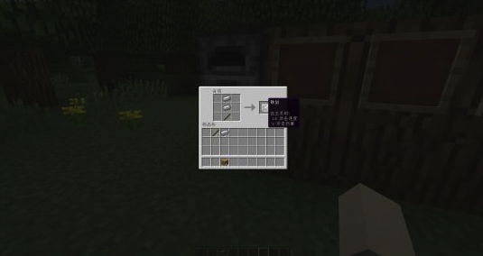
前面已经讲过如何合成了, 要合成其他的剑, 只需要把铁锭替换为:木板/圆石/金锭/钻石.
剑是最常见的战斗武器, 在1.9以下, 他是在同类工具里攻击最高的.
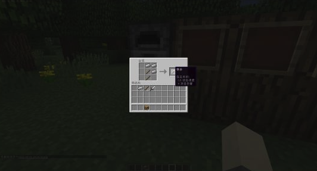
斧头在1.9中由于被增强了攻击力的原因, 变得极为流行, 更因为可以打破盾牌的防御而让玩家们喜爱, 但是攻击速度慢, 木/金斧攻击力为7,其余为9.
空手的攻击力为1, 但攻击速度为4, 大约0.25秒后可以再次攻击. 因为铁剑的攻击速度为1.6,可以推算出,剑的每次攻击间隔大约为0.85.
而铁斧头的攻击速度为0.9, 推算出攻击间隔约为1.025秒, 那么问题来了, 究竟用哪个能在同一时间输出最大攻击?
如果你一般喜欢突然前进打一下,然后后退再寻找时机, 建议用斧头.
如果你喜欢直接上去砍, 建议用剑.因为剑在速度慢时攻击有防御性挥击,造成群攻伤害.
如果你在服务器/联机里与人PVP, 对方用了盾牌, 建议用斧头
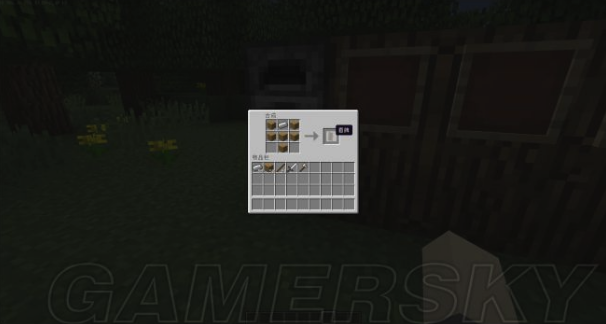
盾牌,可以提供防御
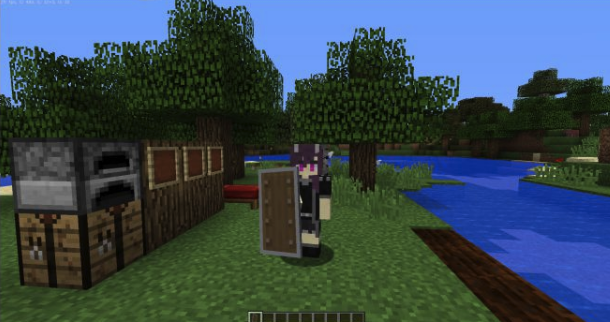
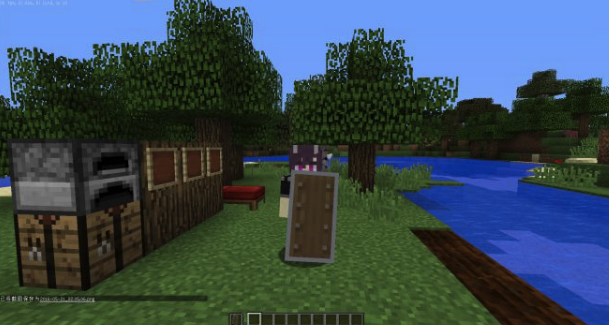
你既可以选择主手拿盾牌,也可以副手拿, 都是右键进入防御模式, 建议副手,因为可以左手拿武器, 防御完了瞬间放开盾牌, 打的对方措手不及.
盾牌可以防御正前方几乎所有的远程攻击, 例如骷髅的箭, 烈焰人的火球. 玩家的箭貌似也可以. 它会弹开这些远程攻击的道具. 近战攻击会被抵消1/3的伤害, 并且攻击者可能后退.
但是如果被斧攻击, 可能会被破甲, 短时间会无法使用.
盔甲
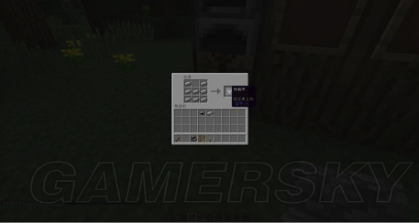
头盔, 减少伤害
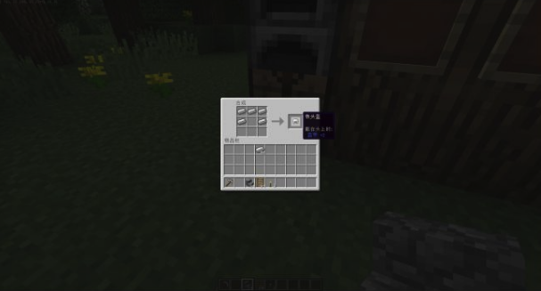
护腿, 减少伤害
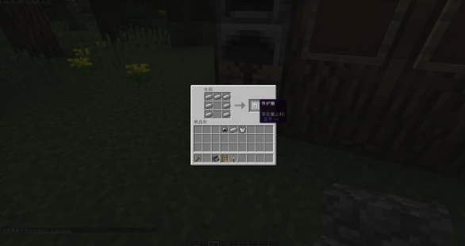
靴子, 减少伤害
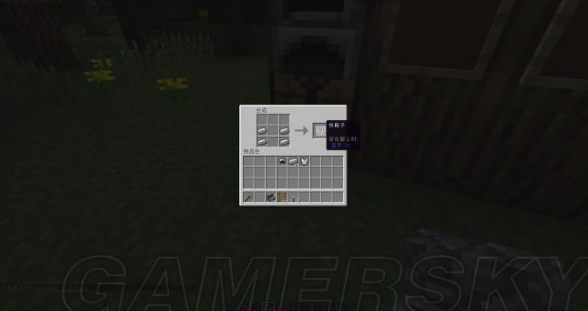
人物的左边的4个格子是装备栏.
左边的合成,可以把铁锭替换为:皮革/金锭/钻石
第一个格子:头盔,第二个格子:胸甲,第三个格子:护腿(裤子), 第四个格子鞋子(靴子)
当你在于怪物/玩家战斗的时候, 不仅仅要选择好用剑还是用斧, 穿一套好的装备也是必须的, 能极大的减少你所受的伤害,使得你不易阵亡.
竖直梯井
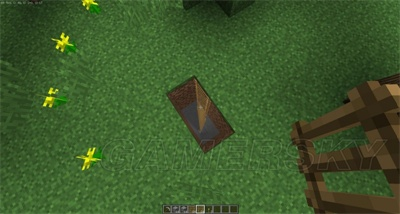竖直梯井是指用梯子搭的矿井，可以直通指定的层去挖矿，与阶梯矿井一样，可以反复利用。
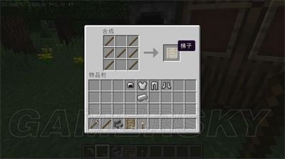
当然，梯井需要梯子
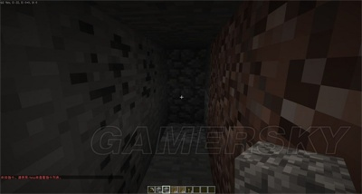
挖矿：在底下你可以随便挖，或者有规律的挖，如图，这是撸主的习惯，2X1的挖法，效率低下，收获甚低。
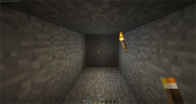
4X4挖法，效率也低
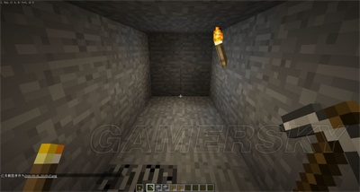
挖矿建议副手拿火把，主手拿镐子
分阶式阶梯竖井
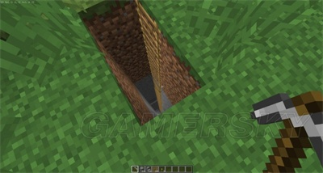
只想挖煤和铁，在5-10层难挖到这些？那么咱们可以试一下把梯井分为几个阶
根据铁/煤矿的生成规则，虽然5层也会生成，但是不常见，因此第一阶可以建在30-40（你可以随笔）
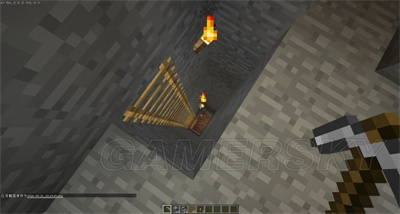
只想挖金子做金苹果？那么建个第二阶吧，在第一阶的一个角落做上通往第二阶的地方，第二阶可以考虑在
13-20层建造
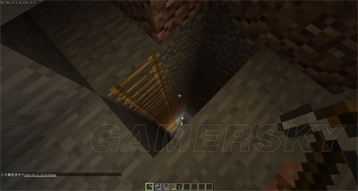
第三阶，一般就是在5-10层，因为钻石通常在这些层出现。
如果你想在矿洞里一直挖矿，又怕挖着挖着没有木棍合成稿子了，你可以再每阶的隧道，每隔一段放个工作台，箱子，确保你可以不断地挖矿。记住，带足够的火把，一但刷怪，就有些麻烦了。还有就是带一桶水，以后会讲。
人工挖矿通常效率低下，一般都是运气。那么如果不想靠运气挖矿，可以试着找一下天然地下矿洞，天然地下峡谷，虽然几乎不可能出现钻石，但是铁/金/煤的数量却很多。甚至你可以去找废弃矿井